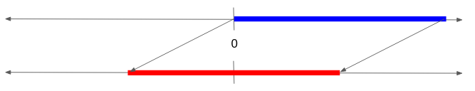

Data Representation
Table of Contents
1. Binary
Binary is a system of storing data using just two digits: 1 and 0. Everything in a computer is ultimately stored in binary (with high voltage being 1, and low voltage being 0), so we need a way to represent any piece of data using binary.
Binary data has no meaning in and of itself; we must assign meaning to each bitstring, and read each bitstring as if it was that particular meaning. For example, the bitstring 0b00111001 can represent 56 if we interpret it as an integer, or the character '9' if we interpret it as ASCII.
A system to data as binary is known as a representation scheme. As long as we use a consistent scheme to read and write this data, our program will work (even if outside users don’t know our scheme). Ideally, schemes should:
- represent data that’s relevant to whatever we’re making
- store things efficiently
- optimal memory usage
- efficient operations
- be intuitive for humans to understand (usually)
1.1. Decimal Conversions
An analogous system is decimal. Decimal numbers are stored using ten digits, zero through nine. Binary is the same, except we only get two digits: the number 0b1010 is equivalent to \(1 \times 2^3 + 0 \times 2^2 + 1 \times 2^1 + 0 \times 2^0\). Since every integer can be uniquely expressed as a sum of powers of 2, we can write any number in binary.
Since \(2^{10} = 1024\) is extremely close to 1000, we can approximate large powers of 2 in decimal. For example, we can write:
\begin{align} 2^{32} = 2^{30} \times 2^2 = (2^{10})^3 \times 4 \approx 4 \text{ billion} \notag \end{align}The actual number is \(4294967296\), which is approximately 7% off from our approximation.
There are also binary SI prefixes: kibi, mebi, gibi intsead of kilo, mega, giga. For example, 512 TiB is called 512 Tebibytes, which is equal to \(512 \times 2^{40}\) bytes.
2. Hexadecimal
Hexadecimal is a system of stroing numbers using 16 digits: 0123456789ABCDEF. Hexadecimal numbers are often prefixed with 0x to distinguish them from decimal numbers. In practice, hex numbers is often used as a proxy for binary.
Since base 16 is \(2^4\), translation between binary and hex is much easier. For example, the hex number 0x87 can be converted to binary by converting each digit separately to binary and then concatenating the results.
3. Representing Integers
The problem is, there’s infinitely many integers. Making a representation that could represent any integer would require infinitely many bits.
One solution is to treat an integer as an array of digits and extend the array as needed (e.g. Python’s large integer primitive). However, this would require variable amounts of time to compute operations.
3.1. Unsigned Numbers
Or, we can only allow for numbers up to a max value (fixed bitlength). This is often referred to as an n-bit unsigned integer, where we allow numbers from \(0\) to \(2^n - 1\) (e.g. an 8-bit unsigned int goes from \(0\) to \(255\)). To write an n-bit number, we always write out the full n bits, including leading zeroes.
However, we need to handle cases where calculations yield a number outside of the allowed range. There are three main cases here (examples below use 8-bit unsigned int):
- Going too high (overflow, e.g. \(200 + 100 = 300\))
- Going too low (also overflow, e.g. \(100 - 200 = -100\))
- Fractional results
For fractional results, we treat division as floor division when both numbers are integers.
For numbers too big or too small, we "wrap around’ so that the largest number representable plus one becomes the smallest number (e.g. for a 8-bit unsigned integer, 255 + 1 = 0=). Equivalently, we are taking the result modulo \(2^n\), or take only the lowest n bits of the number.
3.2. Signed Numbers
However, unsigned integers cannot represent negative numbers. To support this, we use a signed integer, which does support negative numbers. There are several ways to implement signed integers.
3.2.1. Sign-Magnitude
The main idea is that in decimal, we write negative numbers by first writing a “-” sign. Here, we can reserve the first bit of the number to represent the sign of the number, where 1 indicates negative and 0 is positive.
While this is a very intuitive representation, we make tradeoffs since (1) the number 0 gets two representations, and (2) comparators and addition/subtraction require additional handling for the sign bit.
3.2.2. Biased Numbers
We can also bias our numbers, shifting them so that they center on zero instead. Then, for an 8-bit number, our smallest number becomes -127 (instead of 0), and our largest number becomes 128 (instead of 255):

This gives us optimal memory usage, but arithmetic operations become significantly harder to do.
3.2.3. Two’s Complement
The main idea is that when working with unsigned numbers, we noted that overflows were handled by taking the results modulo \(2^n\). Why not handle negative numbers the same way? Here:
- if the leading bit is 0, interpret the number as a normal unsigned integer
- if the leading bit is 1, interpret the number as a overflow unsigned integer (take the unsigned integer and subtract \(2^n\) to get the corresponding negative number)
The result is that the 2’s complement value of a bitstring is always equal to the unsigned value. The shortcut for negating numbers in two’s complement is to flip the bits and add 1.
Two’s complement trades intuition for optimal memory usage and very efficient operations. This is because since the system is equivalent to unsigned numbers modulo \(2^n\), we can just use the operations that we’ve already defined for unsigned integers. For this reason, two’s complement is generaly the implementation of choice for signed numbers. Unless otherwise stated, “signed number” will refer to two’s complement.
4. Boolean Values
We can use binary to represent the boolean states: 1 to mean TRUE, and 0 to mean FALSE. We define the operators OR, AND, NOT, and XOR for boolean values:
| x | y | x OR y |
|---|---|---|
| 0 | 0 | 0 |
| 0 | 1 | 1 |
| 1 | 0 | 1 |
| 1 | 1 | 1 |
| x | y | x AND y |
|---|---|---|
| 0 | 0 | 0 |
| 0 | 1 | 0 |
| 1 | 0 | 0 |
| 1 | 1 | 1 |
| x | y | x XOR y |
|---|---|---|
| 0 | 0 | 0 |
| 0 | 1 | 1 |
| 1 | 0 | 1 |
| 1 | 1 | 0 |
| x | NOT x |
|---|---|
| 0 | 1 |
| 1 | 0 |
5. Bitwise Operations
Bitwise operations are operators designed to work directly with bits. In C, these are:
| Operator | Operation |
|---|---|
& |
bitwise AND |
| |
bitwise OR |
^ |
bitwise XOR |
~ |
bitwise NOT |
<< |
left shift |
>> |
right shift |
In binary, left shift is equivalent to multiplying by a power of 2, and right shift is equivalent to dividing by a power of 2.